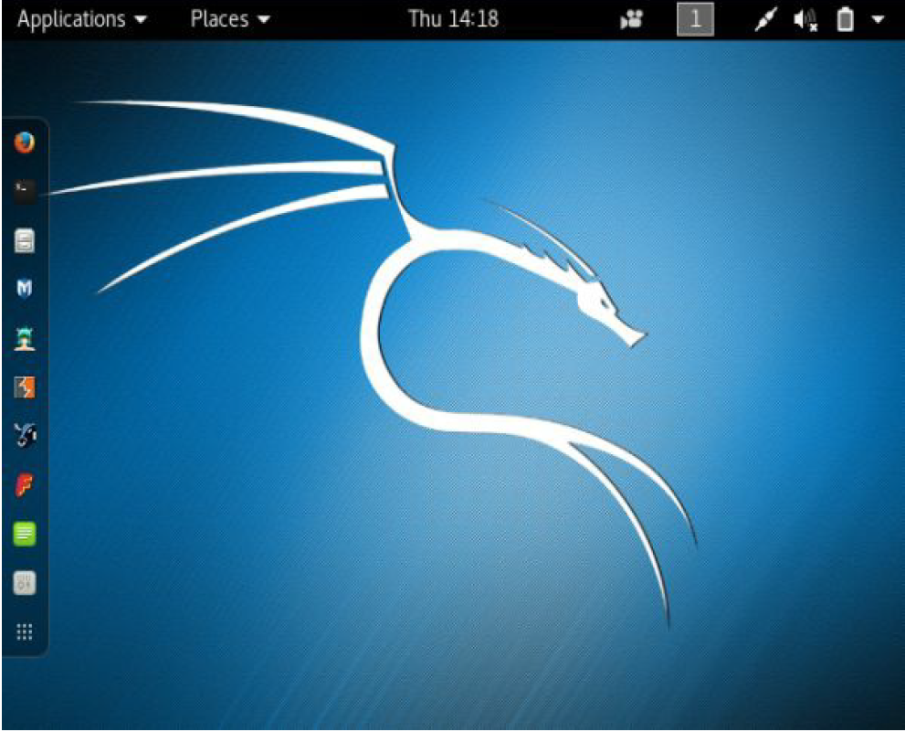
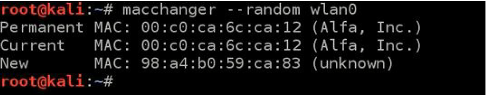
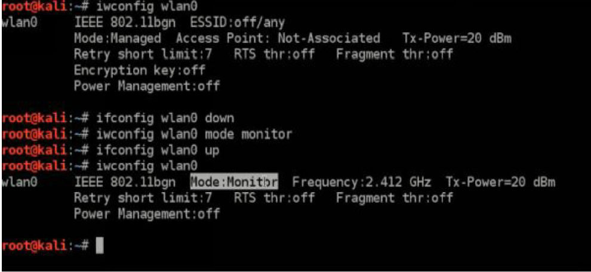
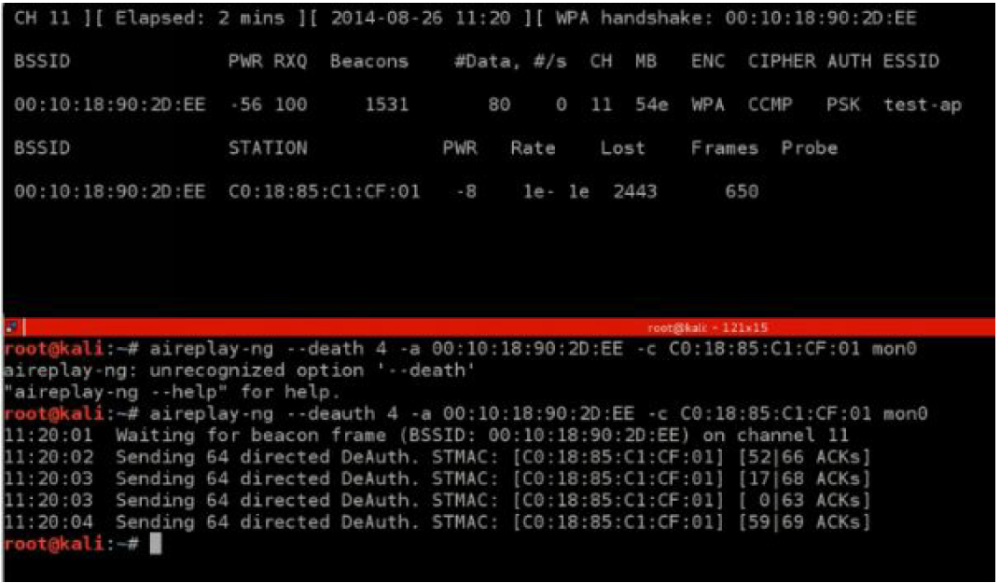
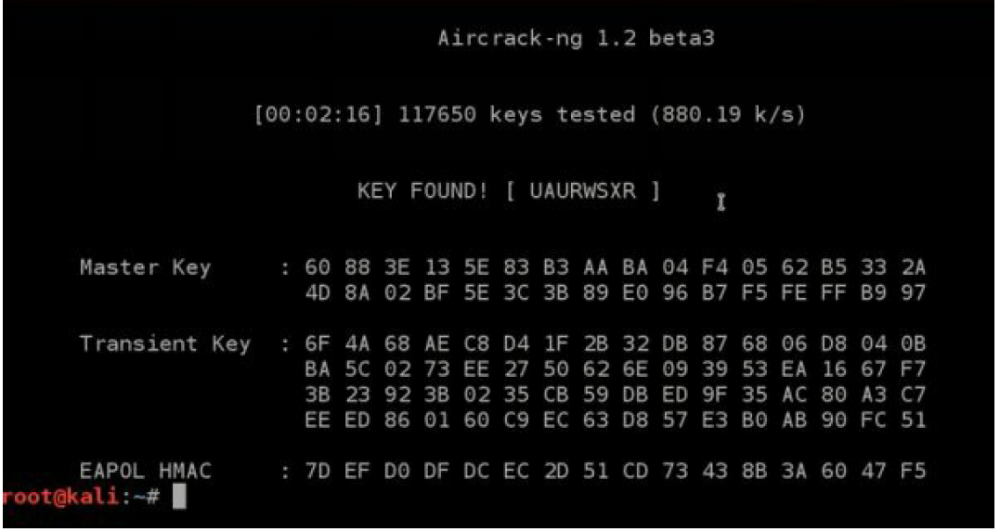

Setting up the lab
In this chapter, you will learn how to set up the lab for hacking. So,
you may have operation system like Windows, Linux or Mac OS X but for
hacking you need specified operation system like Kali or Backtrack. These
operation systems are created for hacking and penetration testing. They have
support almost all of hacking programs. Good news, these operation systems
are free. In this book, we are going to install and use Kali. These both
operation systems are Linux but there are few differences. When we install
Kali, there will be preinstalled programs that can be used for hacking. Maybe
you think there is a problem that you must install new operation system on
your computer, but there are some programs that help you virtualize
operation systems. There are two famous programs called “VirtualBox” and
“VMware Workstation”. We are going to use VirtualBox because it is free
and it has almost same functions. VirtualBox is a free and open-source
program that lets you virtualize operation systems like Windows, Linux, Mac
OS X and even your own operation systems. It supports almost all operation
system. So, you don’t even need to install Kali on your computer you can
simply install Kali in VirtualBox and then use it as common computer. First
of all, download VirtualBox latest version and install it. Here is a link
available:
click on this link
if you are using windows operation system you should download for
windows hosts binary release, if you are using Linux download for Linux
operation system and if you are using Mac OS X download for it. We also
need something called “Virtualbox Extention Pack”(you can find and
download it from virtualbox download link), which lets us input USBs,
wireless adapters and many portable devices. First install VirtualBox and
then double-click extention pack and click install, installation is very easy, so
I am not going to explain it. Once you have installed it, we need a Kali
operation system to install on VirtualBox. But why lose time when you can
simply download already installed Kali? In the Kali website, there is link to
download Kali virtual images, then you can just open these virtual images on
VirtualBox and start Kali. There are for VMware Workstation and for
VirtualBox and you must download for VirtualBox no matter what operation
system you have. Once you have finished downloading, go to the Downloads
folder and search Kali virtual image, the extension must be “ova”, then
double-click it and wait before process ends. If the image has sucessfully
installed, look for settings button and click it. So first of all, go to the system
and correctly enter ram usage for virtual machine (remember, your operation
system needs at least two gb of ram), then you gonna go to the
system>processor and enter usage of processor, also very important is to set
up network connection, because without that you will not able to do
something with Kali. To do this, go to the network and choose “Bridged
Adapter” this means that program will use your built-in wireless adapter.
Now you are ready to start virtual machine. Click “Start” and wait before
username promt appears. the default username is “root”, and default
password is “toor”, but for security we going to change it later. The screen
should look like this:

On the left side should be program called “terminal”, click on it and
you will see that black screen appears with red promt “root@kali#”. You may
have question like “what does root means?”, well root is an access type, to
understand easly this is access when you have full access over computer, you
can do anything what your computer is able to do. In windows you may think
that “Administrator” is a highest level access but that is not so. Highest level
access is root. This is where we going to run our commands. From terminal,
you can run programs easly and do whatever you want. Our system is may
out of date, so run command “apt-get update” to update system and wait until
promt appears. The apt-get is a program that lets us to update system and
install programs easly (we will use it often later), so with the command “aptget
update” we are calling the apt-get program and telling it to update system.
Once you have updated system we need to change password because it is
default, and anyone can access to it. To change password open again terminal
and run command “passwd”, then it going to ask you old password, enter
“toor”and click enter, and enter new password (does not metter what it will
be) and remember it. So to power off virtual machine correctly click on the
button to the up and right and then click on the power off sign. Now we
already set up everything, and ready to learn how to hide your identify how to
become untraceable.Hide identify, become untraceableIn hacking very important thing it to be untraceable. To be able to
hack something is nothing without hiding your identify. For example,
imagine that you hacked someones wifi and did not hide identify, in few days
police will analysis wifi router and there will be your computer information
and finally they will find you and throw into prison. So very important part of
entire hacking to hide identify and make hack untraceable. In this chapter you
going to learn about how to be anonymous & hide identify and how to become fully untraceable.What is mac address?>A MAC address (media access control address) is a unique identifier
assigned to network interfaces for communications on the physical network
segment. Every computer device have different MAC address. The MAC
address is a built-in every computer device when it is created. When
computer starts, operation system reads from hardware device. When you are
connected to the wireless network, it sends packets to you and then your
computer converts these information to websites, movies, images… Imagine
that two computers are connected to the wireless network, first computer
wants website google.com, and the second computer wants amazon.com,
network sends packets to these computers, but how do these computers know
what packets ignore and what packets to recive? Computers identify packets
to recive or ignore by MAC address, when the network is sending packet to
computer, it also writes in packet the MAC address of the computer it is
sending. that is the way how wireless networks and computers are connecting
each other. So, if you do not change your ip and hack someones wireless
network, you let them to investigate your identify by analysing network
history. How to hide MAC address? You may think that how you can change MAC address if computer
reads it from hardware? You are not going to make modification on
hardware, you going to change RAM. When the computer starts, MAC
address loads in RAM and we going to change already loaded MAC address..
So, when you change your MAC address police will find your fake MAC
address and they will not be able to trace hacker. Now you have basic
information about what is MAC address, dangers of hacking without
changing MAC address, how police can trace you, how we can change it.
Change MAC address by Kali.Kali has already installed program called “macchanger” which lets us
to changeloaded MAC address in RAM. Open VirtualBox, start kali virtual
machine and open terminal. We need to stop our wireless card to change the
MAC address. Type in “ifconfig wlan0 down”. The ifconfig is a program,
wlan0 is our wireless card and the down is action what we want to do. So,
this command will stop every wireless service and it is nessesary to stop
network card before changing the MAC address. Then type in the following
command “macchanger --help”.This command tells Kali to call macchanger
and show help. There is program usage instructions. In my case, I will use
random MAC address by entering “macchanger –random wlan0”.macchanger
is program name –random is an option and wlan0 is wireless card. If
everything is correct the screen should look like this:

It shows you what was the permanent (built-in in network card)
MAC address and its corporation in brackets, and down it shows that there is
a new MAC address which does not have corporation. So, now we already
changed the mac address and we need to hack into anyones network. But you
are not ready for that now, because you do not know what is monitor mode
and how to use it. In the next chapter you will learn what monitor mode is
and how to use it with Kali.Wireless modes When you want to hack wifi, you need to capture “handshake”. The
handshake is connection of personal computer and wireless network, it is
when network packet and personal computer packets meet each other. With
handshake you do not need to be in wifi range anymore, you can hack
password with handshake and wifi name (you will learn this later). Now you
need to capture all the packets that are sent through the wifi router and all
personal computers in network. There is a question like “if the MAC address
is used to ensure that each packet gets delivered to the right place then how
we capture it?”, and the answer is that “Yes and no, it is used to send packets
to the right destination, and we as hackers can only receive packets that are
sent to our MAC address , but this only applies to the default mode of your
wireless card, which is ‘managed’ mode, however there is mode that allows
us to capture all the packets in our wi-fi range, not only the ones sent to our
device, hence the name monitor mode.”. So, now you know basics and ready
to actually catch handshake. First of all, change MAC address, enter monitor
mode by typing in these commands on the photo:

You can see that finally when I checked wlan0 mode it was monitor
as you can see on the image. So you are ready to actually capture handshake,
then it is very easy to hack wireless network by handshake and wordlist.
Catching handshake
Handshake packets are sent every time a client associates with the
target AP. So to capture it we are going to capture every packets that are sent.
In this chapter we are going to use program called “airodump-ng”. This
program lets us to sniff and capture the packets that are sent over the
network. This program is also preinstalled program. There are two step to
catch handshake.
1.Start airodump-ng on the target AP (Access Point):
The syntax is something like this:
>airodump-ng --channel [channel] –bssid [bssid] –write [file-name]
[interface]
Ex: >airodump-ng –channel 6 –bssid 11:22:33:44:55:66 --write out
wlan0mon
2.Wait for a client to connect to the access point, or deauthenticate a
connected client (if any) so that their system will connect back automatically.
The syntax is something like this:
>aireplay-ng --deauth [number of deauth packets] –a [AP] –c [target]
[interfac]
Ex: >aireplay-ng –deauth 1000 –a 11:22:33:44:55:66 –c
00:AA:11:22:33 mon0
If the handshake catched, kali will inform you by top right corner of
airodump-ng will say “WPA handshake”.
Follow these steps and when you will catch handshake your screen
should like this:

When you catch handshake you are ready to actually crack password.
Cracking any wireless network
Now you have handshake and you need to download largest wordlist
in the world to have change to hack password. You can download this
wordlist from the following website:
when you download one of them you are ready to hack network. We
are going to use aircrack-ng to crack the key. It does this by combining each
password in the wordlist with access point name (essid) to compute a
Pairwise Master Key (PMK) using pbkdf2 algorithm, the PMK is the
compared to the handshake file. The syntax looks like this:
>aircrack-ng [handshake filename] –w [wordlist] [interface]
Ex: >aircrack-ng is-01.cap –w list wlan0mon
Run this syntax and wait before aircrack-ng cracks it. When the
password will be hacked the screen should look like this:

Congratulations!!! You already hacked WPA secured wireless
network!!!
It is time to secure our wireless network because as you know it is
very simple to hack, and if someone will do, he can then capture packets that
are sent over the network and analys them. There will be your mail password,
your social network password, card pin and so on. It is very dengerous to do
not have secure wireless network. Next chapter you will learn how to secure
your network and become it almost unhackable.
Securing Your Network From The Above Attacks
Now that we know how to test the security of all known wireless
encryptions (WEP/WPA/WPA2), it is relatively easy to secure our networks
against these attacks as we know all the weaknesses that can be used by
hackers to crack these encryptions.
So lets have a look on each of these encryptions one by one:
1. WEP: WEP is an old encryption, and its really weak, as we seen in
the course there are a number of methods that can be used to crack this
encryption regardless of the strength of the password and even if there is
nobody connected to the network. These attacks are possible because of the
way WEP works, we discussed the weakness of WEP and how it can be used
to crack it, some of these methods even allow you to crack the key in a few
minutes.
2. WPA/WPA2: WPA and WPA2 are very similar, the only
difference between them is the algorithm used to encrypt the information but
both encryptions work in the same way. WPA/WPA2 can be cracked in two
ways
1. If WPS feature is enabled then there is a high chance of obtaining
the key regardless of its complexity, this can be done by exploiting a
weakness in the WPS feature. WPS is used to allow users to connect to their
wireless network without entering the key, this is done by pressing a WPS
button on both the router and the device that they want to connect, the
authentication works using an eight digit pin, hackers can brute force this pin
in relatively short time (in an average of 10 hours), once they get the right pin
they can use a tool called reaver to reverse engineer the pin and get the key,
this is all possible due to the fact that the WPS feature uses an easy pin (only
8 characters and only contains digits), so its not a weakness in WPA/WPA2,
its a weakness in a feature that can be enabled on routers that use
WPA/WPA2 which can be exploited to get the actual WPA/WPA2 key.
2. If WPS is not enabled, then the only way to crack WPA/WPA2 is
using a dictionary attack, in this attack a list of passwords (dictionary) is
compared against a file (handshake file) to check if any of the passwords is
the actual key for the network, so if the password does not exist in the
wordlist then the attacker will not be able to find the password. Conclusion:
1. Do not use WEP encryption, as we seen how easy it is to crack it
regardless of the complexity of the password and even if there is nobody
connected to the network.
2. Use WPA2 with a complex password, make sure the password
contains small letters, capital letters, symbols and numbers.
3. Ensure that the WPS feature is disabled as it can be used to crack
your complex WPA2 key by brute-forcing the easy WPS pin.